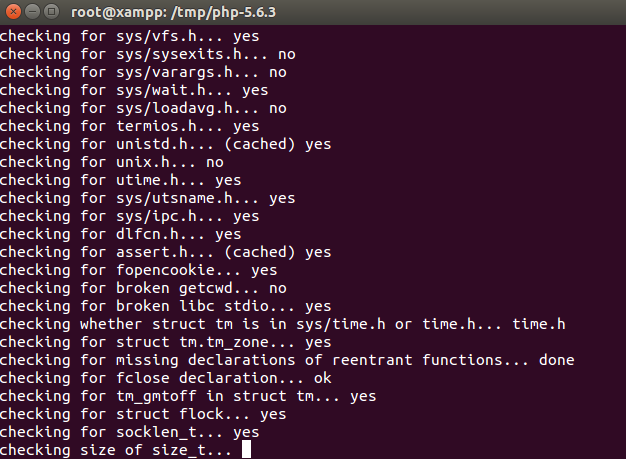

Use a Different PHP Version
In many cases, you might want to use XAMPP with a different PHP version than the one that comes pre-installed. You might do this to get the benefits of a newer version of PHP, or to reproduce bugs using an earlier version of PHP.
| This guide assumes that your system includes all necessary compilation tools. If you don’t already have this, you can install it easily by running the command sudo apt-get install build-essential or sudo yum groupinstall "Development Tools" from your Linux terminal. |
To use a different version of PHP with XAMPP, follow these steps:
-
Stop your Apache server using the XAMPP control panel.
-
Open a new Linux terminal and ensure you are logged in as root.
-
Back up your current XAMPP PHP files, in case you later wish to revert to the previous PHP version. These files are stored in two locations: the php/ and modules/ subdirectories of your XAMPP installation directory (usually, /opt/lampp). You should also back up the php.ini configuration file in the etc/ subdirectory.
cd /opt/lampp mv /opt/lampp/php /opt/lampp/php.old mv /opt/lampp/etc/php.ini /opt/lampp/etc/php.ini.old mv /opt/lampp/modules/libphp5.so /opt/lampp/modules/libphp5.so.old
-
Download a source archive of the PHP version that you wish to use from the PHP website, and extract the contents of the compressed archive file to the /tmp directory.
-
Configure and build PHP in the usual manner. When executing the configure script, specify the XAMPP installation directory for the --prefix, --with-apxs2 and --with-config-file options, together with directives for any other modules you wish to activate. For example, here is a simple example of configuring PHP with only MySQL support:
./configure --prefix=/opt/lampp --with-apxs2=/opt/lampp/bin/apxs --with-config-file-path=/opt/lampp/etc --with-mysql=mysqlnd
Here is an example of a more complex configuration that activates additional modules:
./configure --prefix=/opt/lampp --with-apxs2=/opt/lampp/bin/apxs --with-config-file-path=/opt/lampp/etc --with-mysql=mysqlnd --enable-inline-optimization --disable-debug --enable-bcmath --enable-calendar --enable-ctype --enable-ftp --enable-gd-native-ttf --enable-magic-quotes --enable-shmop --disable-sigchild --enable-sysvsem --enable-sysvshm --enable-wddx --with-gdbm=/opt/lampp --with-jpeg-dir=/opt/lampp --with-png-dir=/opt/lampp --with-freetype-dir=/opt/lampp --with-zlib=yes --with-zlib-dir=/opt/lampp --with-openssl=/opt/lampp --with-xsl=/opt/lampp --with-ldap=/opt/lampp --with-gd --with-imap-ssl --with-gettext=/opt/lampp --with-mssql=/opt/lampp --with-sybase-ct=/opt/lampp --with-mysql-sock=/opt/lampp/var/mysql/mysql.sock --with-oci8=shared,instantclient,/opt/lampp/lib/instantclient --with-mcrypt=/opt/lampp --with-mhash=/opt/lampp --enable-sockets --enable-mbstring=all --with-curl=/opt/lampp --enable-mbregex --enable-zend-multibyte --enable-exif --with-bz2=/opt/lampp --with-sqlite=shared,/opt/lampp --with-sqlite3=/opt/lampp --with-libxml-dir=/opt/lampp --enable-soap --enable-pcntl --with-mysqli=mysqlnd --with-iconv=/opt/lampp --with-pdo-mysql=mysqlnd --with-pdo-sqlite --with-icu-dir=/opt/lampp --enable-fileinfo --enable-phar --enable-zip --enable-intl
Here is an example of what you might see during the configuration process:
Once configuration is complete, proceed to build PHP as usual.
make && make install
At the end of this step, the new version of PHP should be installed in the php/ subdirectory of your XAMPP installation directory, replacing the previous version.
For more information on how to configure and build PHP on Linux systems, refer to the PHP manual. -
Copy the php.ini-development file from the new php/ subdirectory to the etc/ subdirectory and rename it to php.ini. If you prefer to use production settings, you could instead use the php.ini-production file.
cd /opt/lampp/ cp php/php.ini-development etc/php.ini
-
Restart your Apache server through the XAMPP control panel for your changes to take effect.
The new version of PHP should now be active. To verify this, browse to the URL http://localhost/xampp/phpinfo.php, which displays the output of the phpinfo() command, and check the version number at the top of the page.